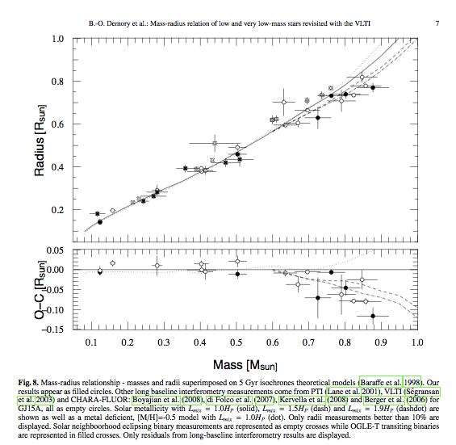

Figure
1:
HR diagram evolution of today's 0.2Msun no fusion system. The simulation goes fine until towards the end-- note the two outlier points.
Date & Time: April 16, 2012
Location: Home
Computing context: Macho Mac: /Desktop/Research/BodenheimerCode/workingdir/UnalteredCode/
Scripts/Software created today:
Useful computer stuff figured out today:
Continuing from last time:
Upload my group meeting presentation and advisor meeting notes to the wordpress blog
Make a 'page' for group meeting presentations/notes, and for advisor meetings/notes
Email the people I want to be on my quals committee
Go talk to the people in the business office about computer purchase order stuff/ reimbursments/ etc.
The low-mass stellar mass-radius relationship from last time:

Low mass stellar
mass-radius relation taken from "Mass-radius relation of low
and very low-mass stars revisited with the VLTI" Authors:
Demory, B.-O.; Ségransan, D.; Forveille, T.; Queloz, D.; Beuzit,
J.-L.; Delfosse, X.; di Folco, E.; Kervella, P.; Le Bouquin, J.-B.;
Perrier, C.; Benisty, M.; Duvert, G.; Hofmann, K.-H.; Lopez, B.;
Petrov, R. Astronomy and Astrophysics, Volume 505, Issue 1, 2009,
pp.205-215
Link to the arXiv
article: http://arxiv.org/abs/0906.0602
Link to the ADS
entry: http://adsabs.harvard.edu/abs/2009A%26A...505..205D
Figure
0.1:
Based on the results plotted in Figures 5 and 6 (from April 15), I suspect I need to lower the surface temperature in polytr02.inp and polytr01.inp (the inputs to the initial model/ polytropic profile generator code), and then re-run the whole series of simulations.
Start with that tomorrow.
Also, check the first (with-fusion) converged model and see whether the temperature profile ever goes above 1e5 (the lower temperature cutoff for fusion within TheCode.f). I think it probably does, but... need to figure out why these lower mass things aren't proceeding as far in their no-fusion evolution as their 0.3 Msun and 0.25 Msun cousins are.
To Do/Today:
Re-running the 0.2Msun case, but with the surface temperature of the initial polytropic input model set to 3000K rather than 3400K
Renamed the previous runs' results to 02FusionStartOld and 02NoFusionStartOld
Got to timestep 633 before stopping. (Based on what I saw while monitoring the run, I'd bet that was a simple matter of needing to decrease the dTIM size more than TheCode can on the 2 allowed decreasing attempts.)
The smallest dTIM value the program probably reached was ~3e12 seconds, so when I restart that run, make sure to set the initial dTIM value to something smaller than that.
Go ahead and parse + plot the results so far, though, to make sure nothing strange was happening.
HR diagram evolution
of today's 0.2Msun no fusion system. The simulation goes fine until
towards the end-- note the two outlier points.
Figure
1:
|
Figure 2: A closer analysis of the strange discontinuous points in the HR diagram evolution of 02NoFusionCont. The atmospheric pressure and surface temperature are the quantities that (I suspect, at least) are driving those blips in the temperature-luminosity diagram in Figure 1. The first 'blip' doesn't derail the simulation at all; in fact, the models immediately before and after that first anomaly look like nothing out of the ordinary ever happened. (Though it should be noted that the simulation was printing out results from every 10th model.) |
|
|
|
|
|
|
|
To see what's going on with these strange blips in the 02NoFusionCont evolution,
Find the model numbers of the two anomalous models:
Step #49
Name of this run: 02NoFusionFromStep48.inp
Result: Yep, that 49'th model really *did* just suddenly jump over in parameter space. The HR diagram of this subsection of the run shows as much. More interesting and possibly revealing are the internal structural evolution plots. In particular, I think the 49th model's strangely low internal luminosity profile is probably causing the outer boundary atmospheric calculations to spit out the low surface temperature for that model's point on the HR diagram.
I suspect that changing the limits on how much and/or how little the overall luminosity can change from step to step is the way to eliminate this behavior. Look in to the SMIN/SMAX values, and maybe the epsL parameter, too.
The internal
structural evolution of the 0.2 Msun No fusion model, evolved
forward from the 48th model (in the original, longer run). The 49th
model in the original run shows up as the lavendar point in data
plotted here. While the internal temperature profile of that 49th
model (or 10th timestep, in this run) is exactly like its neighbors,
its luminosity profile *is* noticeably different (see orange
circle).
Figure
2.5:
Step #63
Name of this run: 02NoFusionFromStep62
Result: for reasons fleshed out in Figure 2.6's caption, I think decreasing some combination of the SMIN/SMAX and epsL parameters will be necessary to fix this strange behavior.
|
Figure 2.6: Plots highlighting the wonkiness within the 02NoFusionFromStep62 run. The surface temperature vs. time (left plot) reflects the changes in the internal luminosity profile (right plot). The luminosity profiles are, I think, what's driving the strange surface temperature values in this run. It looks like the luminosity profiles have d2L/dM2 (i.e., curvature) minimum around 0.12 Msun. Just a slight change in that second derivative will flip the profile between the 'lum increases as you move outwards' to the 'lum suddenly plummets around that critical point' configurations. (It looks like the magnitude of the profiles' slope doesn't change b/w those two configurations, but the sign does.) |
|
|
|
|
Start the simulation from
the model just before the anomalous point, and run it forward for 20
timesteps, printing out models at each timestep. Parse and plot the
results to see if these are really sudden jumps, or if the model
kind of 'drifts' in and out of those strange configurations.
In addition, try re-starting the simulation from the 62nd timestep, with lower dTIM values in effect.
While that's running, let's try re-doing the 0.1 Msun no-fusion case from yesterday, but with the surface temperature value in its initial polytropic input file decreased from 3400K to 3000K.
Renaming all of the 01Msun runs from yesterday to 01FusionStart --> 01FusionStartOld, and 01NoFusionCont --> 01NoFusionContOld
Name of this run: 01FusionStart, 01NoFusionCont
Results: again, stops at timestep 269.
For reasons outlined in Figure 4's caption (see below), I think this is yet another case where tightening the SMIN/SMAX/epsL parameters will prove the way to go.
|
|
|
|
|
|
|
Figure 4: Upper left plot: The HR diagram evolution of the 0.1 Msun, no-fusion run with the T=3000K (rather than 3400K) surface temperature input to the initial polytropic model. Both the model from today (orange) and yesterday (green, 3400K polytropic surface temp) have that same freakishly cold final model. The other 3 plots: A closer look at the normal vs. weirdly dim/cool (final) points in the 01NoFusionCont run. Radial oscillations aren't driving this change. Again, I think it's a change in the curvature of the internal luminosity profile at that last step. Note: The luminosity profiles are each normalized to the highest value in that individual data set. The final model's luminosity is much, much smaller than the others. The luminosity profiles are plotted 'unitlessly' to let us examine and compare their overall *shape*. |
|
Next Steps:
Refreshing my memory about precisely what the SMIN, SMAX, and epsL parameters purportedly control. (Look in polytr1.start for documentation on this.)
Write/copy that info right here
Also check the documentation for other parameters that might have an influence on the curvature of the luminosity profiles (and on how much that is allowed to change from timestep to timestep).